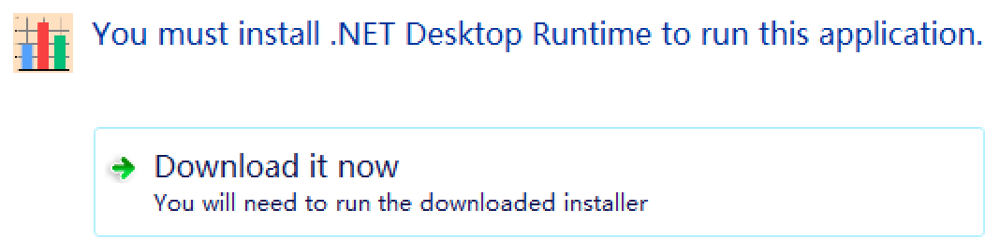

常见问题解答 (FAQ)
在下方查找常见问题和问题的解答。
打开软件时为什么会提示"您必须安装 .NET Desktop Runtime"？
DataSynth Pro 基于强大的 .NET 8.0 框架构建，以实现最高性能和精度。如果您的 Windows 系统尚未安装此必备组件，您将看到此提示。只需在提示窗口中点击"Download it now (立即下载)"按钮，按照微软安装程序的说明进行操作，然后重新启动 DataSynth Pro 即可。

如何找到我的机器码？
您可以在软件主界面点击注册(Register)按钮，机器码将展示在窗口中。
我可以离线使用该软件吗？
当然可以。DataSynth Pro 设计为 100% 离线运行。我们将您的数据隐私放在首位，因此没有任何数据遥测或后台联网要求。您可以安全地直接在本地机器上生成敏感的临床或金融结构数据。
软件运行产生的数据每次都不一样吗？
是的，程序每次运行生成的数据都不同，哪怕设置的是相同的目标值，在数学理论上存在无数种解，您可以放心使用，不会和别人重复。
苹果MacOS系统可以使用吗？
苹果MacOS系统可以通过虚拟机运行windows后打开本软件使用，虚拟机已开源，可免费下载。
为什么运行软件系统提示：被智能应用已阻止可能不安全的应用？
软件未向安全厂商支付费用，因此被错误拦截。按如下设置即可，系统--隐私和安全性--windows安全中心--应用和浏览器控制--智能应用控制设置--关闭。如果有其他安全软件提示拦截，请添加信任放行。